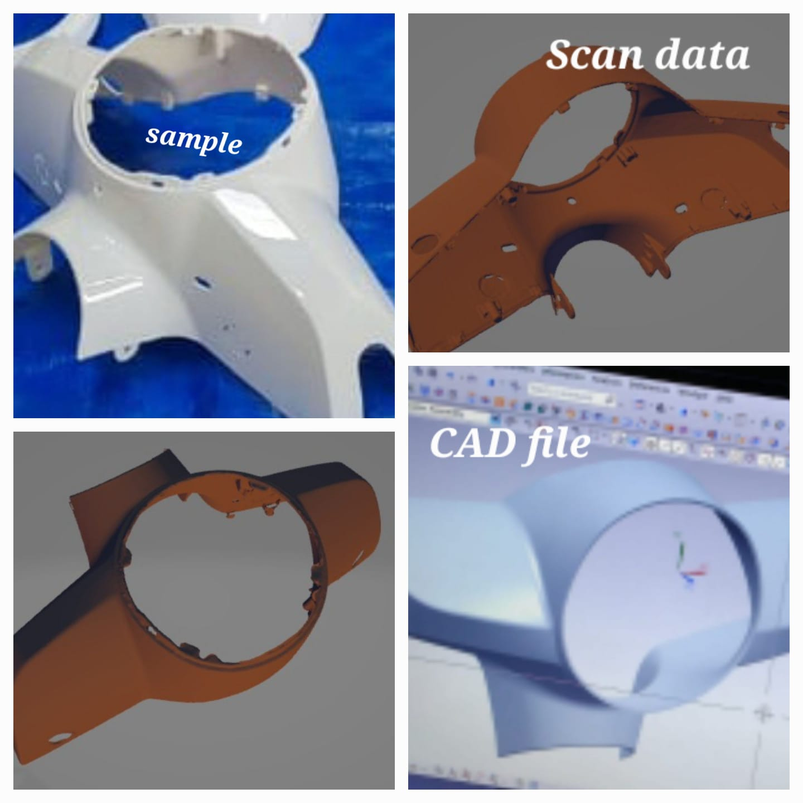
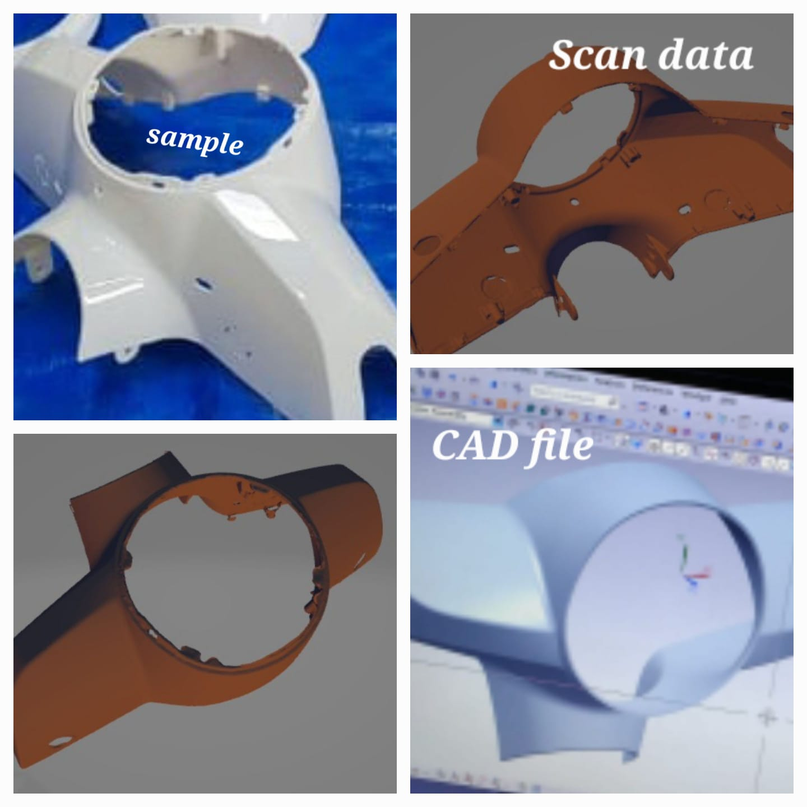

Our Services
3D Scanning
At iSCAN SOLUTIONS, we utilize the state-of-the-art Einscan Pro HD scanner for our 3D scanning services, ensuring exceptional scan accuracy of up to 0.04 mm in Fixed Scan mode and 0.45 mm in Handheld Scanning mode. Our cutting-edge technology and highly skilled professionals ensure that your scans are produced with the utmost precision and accuracy, so you can be confident in the quality of our services.
3D Modeling,Reverse engineering and 2D to 3D conversion
Our team of skilled professionals specialize in 3D Modeling, Reverse Engineering, and 2D to 3D Conversion using the latest technologies and software, including AutoCAD. We work with precision and accuracy to transform your ideas and concepts into reality, while ensuring the highest quality output. Whether you need a detailed 3D model for prototyping or a 2D drawing converted to a 3D model for manufacturing, we have the expertise to deliver exceptional results. Contact us today to discuss your project requirements and let us bring your ideas to life.

 

3D Printing
Our 3D printing services use SLA, SLS, and FDM printing technologies to produce high-quality 3D prints with exceptional precision and detail. We offer a range of options to meet your needs, from resin-based SLA printing for intricate models to sintered SLS printing for complex geometries, and cost-effective FDM printing for functional prototypes and end-use parts. With fast turnaround times and competitive pricing, we are committed to delivering the highest quality 3D prints.